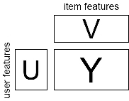

もどる
2012年の日記
2011年の日記
2010年の日記
2009年の日記
2008年の日記
2007年の日記
2005年の日記
2004年までの日記
（か）研究日記 (2006年)
- 2006/12/31 2006年のまとめ
- 2006年も、あまりぱっとする成果は出ませんでした。
- まあ、ぱっとしてたか、してなかったかは、数年経って分かるものだから、現時点ではなんともいえないんだろけどね。
- 2006年は、（引きこもりの自分にしては）多くの（しかもスゴイ）人たちと知りあいになれました。
- 2006年も、ベイジアンにも生成人にもなれませんでした、が、来年も、懲りずに分類ばっかりやりたいと思います。
- 2006/11/22 パーフェクトサンプリングとカーネル
- 来嶋さんにパーフェクトサンプリングのお話を再度聞いた。こんどはだいぶ分かった気がする。
- ちなみにMackay本に、パーフェクトサンプリングの章がある…持ってたのに知らんかった。
- 基本的には、
- まず、列挙したい対象のドメインにおいて、列挙したい確率分布について、つりあいを保つようなマルコフ連鎖を設計する。
- 無限回遷移すれば、所望の確率分布に従うサンプルが取り出せるが、無限の過去から遷移を始めて、現在の時点における値をサンプリングするというように考えることにする。
- ある過去の時点における全ての状態から（同じ乱数を使って）遷移を初めて、今、同じ状態に到達すれば、無限の過去からサンプリングを始めたものが、必ずココに到達するとみなせる。
- したがって、ｔステップ前からやってみて、同じ状態に到達できなかったら、ｔステップ前からやってみる…っていうように繰り返していって、同じ状態に到達できたら、それが所望のサンプル。
- ただし、「ある過去の時点における全ての状態」てのは実際には列挙できない。
- そこで、状態間に半順序をいれる。 また、マルコフ連鎖がこの順序を保存するように設計する。
- 順序の一番小さいものと大きいものが同じ状態に到達すれば、間のやつは全部到達するはずだから、この2つだけ考えればOK。
- なんだか、研究分野としては、参入しやすい（かもしれない）というイミで、カーネルに近いにおいがする。
- カーネルの設計の話じたいは、とりたてて学習理論の素養がなくても、カーネル設計の最低限のルールを覚えれば、あとは、いろんな対象に対するカーネル関数を自由に考えてよい。
適当な表現力をもって、適当な計算時間で計算できるものを一生懸命考えればよい。
つまり、長い間この分野にいなくても、地頭での思いつきで参入できるという利点がある。
- パーフェクトサンプリングもなんかそんな雰囲気。 マルコフ連鎖が満たすべきルール（順序を保った遷移を設計するとか）をいくつか覚えて、あとは、いろんな対象を数えるためのマルコフ連鎖を設計すればよい。
それは、確率過程やらなんやらの素養がなくても、地頭で何か思いつけばいいのだ。
- カーネルが、何かオシャレなもののカーネルを設計できたらOKだったのと同じように、一生懸命考えて、何かオシャレなものを数えることができたら、それでいいのだ。
- 2006/10/18 協調フィルタリング、リンク予測、マルチタスク学習、アンド、ビヨン
- これらの問題は、やりたいことは違うが、問題の表現がとても似ている。 というか、同じ。
- 従って、例えば、協調フィルタリングのアプローチをマルチタスク学習に試してみることができる。
その逆も可。
- そして、現在別々に提案されているアプローチも統一的に論じることができる（はず）。
- まず、問題を協調フィルタリングの文脈で書くとすると、データは次のような3つの行列で表現される

- 与えられるもの：
- Yの要素 yij は、ユーザー i のアイテム j に対する評価 （ところどころ抜けている）
- Uの行ベクトルは、それぞれのユーザーの特徴ベクトル。
- Vの列ベクトルは、それぞれのアイテムの特徴ベクトル。
- 行がユーザーに、列がアイテムに対応する。
- 求めるもの： Yの抜けている部分の値
- あるいは新しいユーザー（行）が追加されたときの、Yの対応する行ベクトル。
- あるいは新しいアイテム（列）が追加されたときの、Yの対応する列ベクトル。
- 教師アリ、セミ教師アリ、トランスダクションのような問題として捉えられる。
- 問題のバリエーション： UやVが与えられる場合と、与えられない場合がある。
- さて、そのほかの問題も同じ形式で書ける。
- リンク予測（＝ネットワーク構造の予測問題）
- リンク予測は、ネットワーク構造の観測されている部分から、残りの部分を予測する問題。
- 行や列がネットワークの構成単位（ノード）に相当する。
- Yは隣接行列を表す。 枝の向きがない場合にはYは対称。
- UやVはノードの属性を表す。 枝の向きがない場合にはU=V'。
- タンパク質ネットワークの場合には、Yの左上の方が割と密に分かっていて、あとは分からん、という設定が自然らしい。
- UやVが与えられない場合もある。 僕が最近取り組んでいたのはこれ。
- マルチタスク学習
- 複数の関連ある教師アリタスクを（別々に解くのではなく）タスク間の類似性を利用しながら、まとめて解く。
- 行がタスクに、列が事例に相当する。
- Yは、予測するべき値（分類問題ではクラス）。
- Vは、データの属性（分類問題の入力）。
- Uは、通常与えられない。
- が、タスクの属性があるような場合も当然考えられるだろう。（店舗の属性とか）
- コンジョイント分析とかも同じような感じで書ける気がするけどよくわからん。
- ちなみに、先日のNC研究会であった麻生先生らのサーベイはとても参考になります。
- 2006/10/11 GP、RVM、およびBPM
- 瀧川さん（すごい人）のところからぱくってきた、HerbrichのLearning Kernel Classifiers本の3章のまとめ。
- GP（Gaussian Process）、RVM (Relevance Vector Machine)、BPM（Bayes Point Machine）がまとまっている。
- まず、基本的には、前者の2つ(GPとRVM)はモデルとしては同じで、線形回帰モデルのパラメータ事前分布が正規分布であるもの。
- GP（Gaussian Process）は、モデルそのものこと。
- RVM (Relevance Vector Machine)は、そのパラメータ事前分布を、平均0として、分散を学習するぞ。
- RVMでほとんどの分散が0になってスパースな予測器ができる。
- ともに線形回帰がベース（もちろんカーネルによる非線形化が可能）で、最適解がclosed
formで書ける（行列計算は必要）。
- シグモイド関数をかませば分類器になる。この場合、最適解は求まらないがLaplace近似や変分法で近似的に解く。
- 一方、BPMは、もともと分類問題からスタート。
- 線形分類器のパラメータは、スケールを変えても同じ分類器になるため、パラメータを単位超級面上の点と解釈できる。
- で、BPMのパラメータは（この超球面上での）バージョン空間の重心とする。
- バージョン空間とは、事例と矛盾しないパラメータの集合、ここでは単位超球面上の部分集合
- BPMのパラメータは、線形分類器のパラメータの事前分布が、バージョン空間の中で一様であるとしたときの期待値に相当する
- これを求めるのには、当初はMCMCっぽい方法が提案されていたが、現在はもっと簡単なやり方がある。
- パーセプトロンに食わせる例の順序を変えて、たくさんパーセプトロンを作って、それらのパラメータの平均をとればよい。
- 2006/10/3 研究のスキル
- 「研究のやりかた」のリンク集から２つご紹介
- 「いい論文を書くには」
- どんなにいいアイデアでも人に言わなければ（そして伝わらなければ）、意味がない。
論文の目的は、自分の頭から読者の頭にアイデアを伝えることである。
- 研究の進め方は、「アイデア→研究→論文」ではなく「アイデア→論文→研究」だ。
- 書くことで、考えている（考えてない）ことが明らかになる。
- 人に早い段階で伝える → 協力できる可能性が増す。
- イントロは、問題と貢献を明らかにし、伝える、そんだけにしとけ。
- "rest of this papers is ..."は使わない、イントロで関連するたびに"(Chapter
X)"のように書く。
- イントロと内容の間に関連研究の章を入れない。 それは論文の後半に。
- 内容は、記号の定義からはじめない。 まず例を使う 。
- これをやると、寝ちゃうからって。
- まず、例をつかってイメージを伝えることを。 イメージを共有してから、記号なりなんなり使う。
- 関連研究には敬意を払う。
- 関連研究に払う敬意をお金のように考えない、それによって論文の価値は減らない。
- 自分の論文の弱みも書く。
- 引用される立場に立ってみて、その立場に立った自分の機嫌を損ねないように書けばイイと。
たぶん。
- とにかく論文は早く書き始める。
- 能動態を使え。
- あと、もうひとつ心に残ったお言葉、「論文はインプリよりも長生きである。」
- そんなに「ビジネスにおけるプレゼンテーション」ライクに捉える必要はないかもしれないが、まず、大前提として、すべての読者が自分の論文にとても興味を持って時間を割いて頑張ってありがたく読んでくれるという奢った考えを捨てるということなんだろうと思う。
読む人がお客様、それも、そこまで自分の話の詳細に興味をもっていない、それも、時間がない人であることを想定して書く。
- 「私が教わっておきたかった１０個のこと」
- 曲解してる気もするけど、心にのこった４つをご紹介。
- 数学の人の話なので、やたら「ヒルベルトでもそうだった」みたいな感じになっています。
- 研究者は（論文よりも）解説記事によって名前が残るもんだ。
- エライ人でも、研究的業績よりも、教科書の著者として有名とかいう人が多い。
- たしかにそうかも。有名な教科書の人とかも実はすばらしい業績を残しているのに「あー、なんちゃらブックの人ね。」
- ここから学ぶべきことは何だろうなあ…とりあえず、ある程度そのトピックを勉強したら、まず、やさしいチュートリアルなり、サーベイなりを書く？
- たしかに、他の人への貢献度合いという意味では、微妙な拡張で論文かくよりも遥かに高いかあ…。
- すごいエライ人でも実は２つ３つの技で生きてたりする。
- いい業績をばんばん出している人も、実はよくよく見てみると、技的には２つ３つの技を繰り返し使っている。
- 要するに、あまり人がもっていない、かつ使える技を、少なくてもいいからきっちり身につけることが大事ですと。
- ん、なんか安心。 でも実は、その技を見つけるのが大変なんだろうけどね。
- 「ファインマンメソッド」を使え。
- ときたい問題のストックをもっていて、新しい技に出会ったら、それを解きたい問題に順番に適用してみる。
- ファインマンは、そういうことをやっていましたよ、とのこと。 でも、実はこれって誰でもやってることかも…。
- 謝辞は惜しみなく。
- 「研究のやりかた」のほうとも重なるけど、とりあえず、人の仕事には敬意を払えと。
- 2006/9/30 DMSS
- 先週、International Workshop on Data-Mining and Statistical Science (DMSS2006)というワークショップに行ってきました。
- データマイニングの「国際」ワークショップ（参加者はほとんど日本人だが、概ね英語で行われた）
- ちゃんとホテルの会議室をとって、ちゃんと国際会議っぽい雰囲気、すごい。
部分的にパラレルセッションになったりして、発表は32件、結構な規模である。 招待講演は自分を入れて5名。 参加者は60−70名で、ほぼ大学関係者、データマイニング8割、統計2割という感じ。
- 招待講演のかたがた（一部のスライドはここに）
- 津田さん（Max Plank Institute）：グラフマイニングの機械学習への応用
- 問題： 構造データを、部分構造を使った特徴ベクトル表現をしようとすると、次元が高くなりすぎる（＝計算できない）
- ここでは、グラフのクラスタリングの問題（RNA構造の分類）と、グラフの回帰問題（化合物の活性の予測）などがしたい
- 解決策： 高速なグラフマイニング手法と組み合わせるよ
- 予測に重要な部分構造の選定の部分を、グラフマイニングアルゴリズムをブラックボックスとして呼び出すことで高速化する。
- 目的関数にL1正則化項を入れることで、実際に必要な部分構造の数が少なくなる。
- マイニングアルゴリズムを作る人は、是非、重み付きで実装してほしいとのこと。
- （でも、普通の単調減少の評価値じゃなくて、マイナス重み可のやつじゃないとダメだよね。）
- ターミエさん（統数研）：木のパターンマイニング
- 問題： 物事の間の潜在的なネットワーク構造をとりだしたい
- マイクロアレイなどの遺伝子同時発現データから遺伝子ネットワーク同定をするという話がある
- 大抵の方法はグリーディな構造探索を使うので、たくさんローカルな解がある。
- 解決策： たくさんの怪しい解のなかから、信頼のおける部分をグラフマイニングで取り出すよ。
- たくさんの解の中で共通のパターンを見つければそれが信頼のおける部分ネットワーク構造なはず。
- 彼の開発したDAGパターン発見器で見つける。
- コレかな。
- 彼は閉集合パターンと呼ばれるパタンを発見する方法の木版「Dryade」の作者
- 歴史的には、先にグラフマイニング（by Inokuchi）があって、あとから、木の特性を利用してより高速に掘るという感じで手法が発展していったというのが面白い。
- 吉田さん（東大・医科研：たぶん渋谷さんの近く？）：高次元データを扱う方法
- 問題： マイクロアレイデータのように、データ数よりも次元が大きい場合に意味のある結果を出したい
- たとえばクラスタリングで、次元が大きいと意味のある答えが出ない。
- 解決法： 情報を落とさずに、次元を落とすよ
- たとえばGaussian Mixtureによるクラスタリングでも、高次元をそのまま扱うのではなく潜在変数を考え、次元を落とした先でのGaussian Mixtureを考える。
- 適切な複雑さのモデルを、よく考えて誠実に設計しているなあ、という印象。
- 来嶋さん（東大）： パーフェクトサンプリング
- 問題： MCMC(Markov Chain Monte Carlo)ってどのくらい待てば所望の分布からサンプリングできるの？
- 所望の分布に従ったサンプリングをしたいとき、MCMC(Markov Chain Monte Carlo)を使うことができます。
- ここでは、これを使って分割表の解の数を数えたいらしい
- MCMCでは、マルコフ連鎖の極限が、任意の分布をシミュレートできるようになっています。
- でも極限っていってもどのくらい待てばいいんだろう？ なにか、絶対にサンプリングできてるよ、みたいな方法はないのかなあ？
- 解決法： パーフェクトサンプリングなら、有限の時間で確実に極限分布にしたがってサンプリングできますよ
- CFTP(Coupling From The Past)という、超スゴイ方法を使えばこれができるらしい。
- マルコフ連鎖の全状態から進んでみて、全員が同じところに行き着いたらそれがサンプリングされた状態になっているよ、ということらしい。
まだいまいちよくわからん。
- ポイントは、そのCFTPにおいて、マルコフ連鎖をうまくデザインするところ。
で、そこで、うまくやりましたと。
- 来嶋さんのページにフレンドリーな解説があるっぽい。
- 鹿島さん（IBM）： ネットワークの構造予測 （12月にICDMで話す内容）
- 問題： 欠損したネットワーク構造を、構造情報をもとに予測（復元）したい
- 遺伝子のネットワーク構造や、SNSでの推薦、協調フィルタリングなどででてくる問題。
- 解決策： ネットワークの時変モデルを使って推定するよ
- ネットワークの時間遷移モデルを考えて、パラメータ推定をする。
- 変異の履歴は利用できないので、ネットワーク構造変異の定常状態を考えそれをフィットするという方法で解決。
- その他面白かった話＋α
- 「僕的ベストペーパー」竹内さん（三重大）： 保険金の期待値を計算する
- 問題： 保険の掛け金を計算するのに、各人に将来支払われるだろう保険金の条件付期待値を推定したい。
- 保険金は higily skewed & heavy tail だから、普通の2乗誤差回帰（期待値の推定）では推定値が安定しない。
- 一方、絶対誤差を使った中央値などのパーセント点の推定はロバストだが、ホントに求めたいのは期待値である。
- 困った。
- 解決策： 2段階の回帰をやればロバストな推定ができるよ
- モデル化を2段階に
- 条件付パーセント点を推定するモデル（絶対誤差、ロバストだけど目的違い）
- そこからのずれの期待値を推定する単純化されたモデル（2乗誤差、不安定）
わける
- （１）は安定した推定ができるのである程度複雑なモデルをつくれる＋（２）の不安定さを、簡単化したモデルにすることで回避。
- 実際にUSの保険会社からデータをもらってやったらしい。
- 実問題に根ざしているとともに理論的なバックグランドもちゃんとしている。（しかも英語もよどみなし。）
- 佐藤さん（筑波大学）： 商品の競合関係の解析
- 問題： 新製品をいれると既存の商品との競合関係がどう変わるか知りたい
- 売り上げの時系列モデリングを作ろうとすると、途中で次元（＝製品）が増えるのをどうしたらいいだろう？
- 解決策： 次元切り替え付きの状態空間モデルを使うよ
- 価格弾力性（価格を１単価下げると、売り上げがどれだけ上がるか）などのパラメータが事変するようにモデル化することで、これらがどのように変わるか知ることで知見を得られる。
これらのパラメータが状態空間モデルの「状態」にあたる。
- 新製品投入したときに、製品数が変わるから、合わせて次元が切り替わるようなモデルを考える。
- 次元が増えるときには、既存のパラメータは現在値を事前分布として使う、逆に減るときには消える変数について周辺化する。
- 結果：
- 新製品が投入されると、既存商品の
- 商品力が下がる（トレンドが下がる）
- 値引きが効かなくなる（価格弾力性の定価）
- ブランド間差異（交差価格弾力性）が小さくなる
などがわかる
- ちゃんと「知識発見」できてる！ 「実データ→モデル化→技→知識」と全体の流れがうまくまとまっているマーケティングサイエンスの良作。
- α（久保山さんたちとの共著論文）： 木のとても速い分類器
- 問題： 木構造データの分類問題を高精度に、そして速く
- XMLや、糖鎖（バイオ分野）などは木構造で表される、これらのデータでは構造が意味を持っている
- 鹿島&小柳(2002)ではカーネル法という方法で「全ての考えうる部分構造」をベースに分類問題をそれなりに効率的に解く方法を考えたのだが、ちょっと遅い。
- 解決法： 木のnグラムをベースに考えると速いよ
- 木のnグラム（長さｎの配列と同型の部分構造）は、そこそこの表現力を持っているが、「全ての考えうる部分構造」よりも各段に速く数えることができる。
- 配列のnグラムを使ったspectrum kernelに因んで、spectrum tree kernelちゅうことで。
- 2006/9/19 現在、ECML/PKDDが開催されているようだ
- その中の、MLG（Mining and Learning with Graphs）というワークショップ
- （コッソリ共著者に入れてもらっている）くぼやまさんが、木カーネルを、部分構造のマッピングの数とみることで、マッピングの種類を変える（曖昧な構造マッピングの程度の、曖昧さの程度を変える）ことでいろんな木カーネルのクラスがあることを示す。
- また、西郷さんたち（含津田さん）がベストペーパーをとったようだ。 めでたい。
- 内容はICMLのやつを「化合物の部分グラフパターン→活性値みたいなやつ」という回帰に使ったようだ。
- PKDDのほうでは井手さんが、とある実験的時系列解析の大家と戦いを繰り広げる模様。
- 戦いへの経緯の詳細は、いでさんのmixi日記に譲るが、発表の内容は、k-meansとかで滑走窓で取り出された時系列片をクラスタリングすると、何故かクラスタ中心が正弦波になってしまう（＝つまらなくなる）という、とある大家が「実験的に」示した問題に対し、それが何故おこるかを「理論的に」示したもの。
井手ワールドが炸裂しています。
- ちなみに、この論文の日本語版短編では人工知能学会の全国大会で賞もとっている。 めでたい。
- そのほか近況
- こっそりICDMのAccepted Papersが出ていた。
- 日本人は計
4チームのようだ。（神嶌さんのご指摘、５チームでした）
- 北海道で来週開催されるDMSSに招待講演（？）することになった。 行ける口実ができてうれしい。 しかし、内容は先日のを大体使いまわせるとしても、英語、かあ…。
- 2006/9/5 まさに結果オーライな
- ICDMに出していたリンク予測の査読結果が帰ってきた。 なんと"regular
paper"としてアクセプトされた。
- 正直、"short paper"になんとか引っかかってほしいと願っていたくらい。
査読者の回答も"reject"方向の人は居ないにしても、かといって、そんなには褒めてない。
- しかし、ノイズを差し引いても"short paper"くらいのよさはあったのだろうということで、結果オーライです。
- 結局、一番評価が高かったのが「presentation」。今回、安倍さんに論文の構成と英語の表現とかの「論文かくとこ」をだいぶみてもらったわけだが、纏め方・書き方というのは重要だなあ、というのは再認識。
- 極端な話、書き方ひとつで通るものも通らなければ、通らないものも通してしまうのだとおもう。
特に日本人の場合、うまく書けば、案外従来の3割増くらいの評価は得られるのだと思う。
要するに、テクニカルな内容はそのままで、上手な人がもう一回書くと、通ってしまう論文は山ほどあるはず。
- そういえば、昔、津田さんと一緒に書いてたとき「僕らはこの世界ではぺーぺーなんだから、一回読んで分かってもらえなかったら終わりだくらいの気持ちで書かないと」と仰っていた。
んん、仰るとおり。
- 内容を読むとイマイチなんだけど何故だかいいところにバンバン通っている人。
そういう人は書き方も含め「何かしらの技」を身につけているのだとつくづく思う。
- ちなみに内容は、とあるパラメトリックなネットワークのモデルを考えて、リンク予測に使ってみたら、タンパク質ネットワーク構造の予測とか案外うまくいきましたよみたいな話です、が、ま、それはどうでもいいのです、結果オーライで。
- 2006/8/24 訓練とテストの状況が違うときの学習
- 通常、機械学習では、訓練とテスト（実地）は同じ状況で行われていることを前提としている。
たとえば、入力xから出力yを予測するような教師あり学習でも、p(x)やp(y|x)は、訓練時とテスト時で変わらないとするのが普通である。
- しかし、実際には、さまざまな理由によりこれが成り立たない状況もある。
- 偏ったサンプリングの問題： マーケティングにおいて、アンケートデータxをもとに、マーケティングに有益なとある属性yの予測をしたい場合、訓練データにはそもそもアンケートに答えてくれた人のデータしかない。
つまり、実際の世の中のptest(x)と、訓練データのptrain(x)が異なっている。
- ドメインの違いの問題： テキスト処理において、ニュースの文書xから、そのカテゴリyを当てたい場合、時期によってp(x)が変わってくる。
あるいは、ある製品の感想xから、その製品に対する意見の種類yを当てたい場合、同じ単語（例えば「短い」）でも分野によってイミの良し悪しが異なってくる。
この場合p(y|x)が変わったといえる。
- そんなときにどういうやり方が適用できるかは、テストの状況やデータがどれだけ分かっているかに依存する。
- 杉山さんのナイスサーベイでは、テスト時のp(x)が分かっている場合にこれを活用する方法が紹介されている。
- importance samplingと同じ考え方で、訓練データがテスト時の分布で生成されたかのように、訓練データをぐいっと重み付けして学習する。
- 訓練データxに対し、ptest(x)/ptrain(x) で重み付けする。
- さらにここで (ptest(x)/ptrain(x))λなどとやったりするのがオシャレらしい。
- このやりかたって、直接目的関数の勾配をとるタイプの強化学習にもそのまま使えそうですな。
- ビアンカのやつも本質的には同じことをやっている。
- コレとかは、テスト時の(x,ｙ)両方がある程度与えられている状況。
- こういう話は自然言語処理ではdomain adaptationという名で研究がされている模様。
テスト＝適用したいドメイン内のテキスト、訓練＝世の中にたくさんあるテキスト、みたいな対応。
- リンク先の論文は、「ドメイン内」、「一般」、「ドメイン外」、の3つの分布からデータが発生していると考えて、「適用先のドメインのデータ」は前者の2つから、「世の中にあるデータ」は後者の2つから発生していると考えてEM、というアプローチ。
- なお、この論文では先行研究として、一般のテキストから学習したパラメータを事前分布の平均だとして使って、ドメインのデータで学習する、というやり方が紹介されている。
- テスト時の情報が事前に与えられていなくて、訓練時と一緒かもしれないし、ちょっと違うかもしれない、みたいな問題もありうると思う。
- 2006/8/3 ICML読む会
- 先日、7/29（土）に、東工大すずかけ台で場所をお借りしてICML読む会をやってみた。
- まず、実際にICMLに論文を出してる2人の論文紹介
- そして、そのほかの参加者が論文を紹介、いくつか心にヒット。
- 「Trading
Convexity for Scalability Predictors」は、SVMのhinge loss (凸関数) に、lossが大きいときにある程度以上大きくならないように平らにする（＝過学習を防ぐ）ための補正
（凹関数）を足した目的関数を最適化する（CCCP：ConCave-Convex Programmingとか言っている）。
目的関数は凸ではなくなるが、凹関数部分を勾配で近似してやりながら、凸最適化を繰り返しとく形にもっていく。
この手の「凸じゃなくても、やりたいことをより正しくあらわしている目的関数なら使っていこうよ」的な考え方は最近ちょっと盛り上がっているようだ。
うむ、カッコイイ。
- 「Online
Decoding of Markov Models under Latency Constraints」は、オンラインでViterbi decodingする（＝観測系列の全体をみることなしに、ある時点の隠れ変数を当てる）必要がある場合、に当てたい時点から何個先まで観測すれば、当てたい時点の隠れ変数を当てられるか、を考えたもの。
遅れと曖昧さをトレードオフした目的関数が最小になるような最適な遅れを決める。
これって、リアルタイムでの異常検知や自然言語処理に需要のある重要な問題だとおもう。
うむ、カッコイイ。
- ちなみに僕の紹介した「Discriminative
Unsupervised Learning of Structured Predictors」は、structured output を教師ナシでやる話。 なんじゃそりゃと、すごく気になったので読んでみたのだが、基本は著者らが前からやっていた教師ナシのSVM
（＝マージンが最大になるようなクラスラベルの割り当てを決める。 SDPになる。）を拡張していったもの。
経緯がわかるとまあそんなもんかな、という感じ。 実験データがものすごく小さいので、相当遅いのだろう。
うむ、これは微妙？
- 会自体は結構盛り上がって楽しかった。 こんどはNIPS読む会を、ってことに。
- 2006/7/20 学生のときに何をやっているのかよくわからずにやっていたものをコッソリ振り返ってみる（３）
- 今回は、例の講義の３回目、情報理論。 物理の学生向けに一般的な話ということだったが、 ええ、復習というより、かなり普通に勉強になりました。
- （情報論的な）エントロピーの解釈についてひとつ面白い話があった（もしかしたら、普通に授業で習うのかもしれんですが…）ので、ご紹介。
- 情報論的エントロピーは - Σp(x) log p(x) で定義されるが、これは見方によると「確率の期待値」（正確には「対数をとった確率の期待値」）として解釈することができる。
いいかえると「ある確率分布によって生成される事象の平均的生起確率はどのくらい？」というのをあらわしていると。
- 「確率の上の確率分布」を考えるてのが、ちょっとトリッキーぽいけど、物理の人だと、個々の事象ではなく、あるエネルギーをとる事象の集合を考えてもともとの事象→エネルギーに置き換えてしまい、そのうえで「エネルギーの期待値」を考える、というのに慣れているらしいので、そのイメージらしい
（一個目の「確率」を「エネルギー」に置き換えて考える。）。 たぶん「典型的なエネルギーってどのくらい？」みたいな感じ。
- 同じように、エントロピーは「典型的な確率ってどのくらい？」みたいな量だと。
平均は、ある確率変数の特徴を表すものだから、いま、ある確率分布の特徴量としてエントロピーを定義しようとすると、「確率」という確率変数の平均をとる、というのは自然であると。
- Z(x) = log p(x) を確率変数だと思うと、エントロピーはその期待値になっているので、こいつをp(x)について平均したものがエントロピーであると。
じゃあ「なんでlogをとるのか？」というと、大体p(x)というのは、複数の確率の積（xは大体ある種の系列で、それは、（条件付の）サイコロを何度も振って作られる）なので、普通に期待値を取っちゃうとほとんど確率0のところに確率がかたまってしまい、平均が意味をなさなくなってしまう。
こういうときにはlogをとるのが定石で、そうすることで積→和になってlog p(x)が対数正規分布に従うから（たぶんな）。
- 妄想。
- そんな風に考えてみると、じゃあ、分散とかのもうちょっと高次のエントロピーも考えられるんかなあ。
- q(p) を確率ｐをとる確率とすると、- Σp(x) log p(x) = -∫q(p) log p dp だから、こんな
-∫q(p) (log p)d dp かんじ？
- 確率分布の特徴を表すために、確率の上の確率分布q（＝ある確率で発生する事象がどのくらいあるか）によって表すのは、各事象がどれだけの確率で起こるのかを表すpよりももう少し抽象的な情報であるといえる気がする。
- たとえば、p(グー)=0.5、p(チョキ)=0.25、p(パー)=0.25 という確率分布も、p(晴れ)=0.25、p(雨)=0.25、p(曇り)=0.5
という確率分布も定義されているドメインは違うけど、確率分布の性質としては同じはず。
- ２つの確率分布の違いを表すのに、よくKL-divergenceを使ったりするわけだが、これは２つの分布が同じドメインに属していないと意味ない。 でも、確率の上の確率分布ってとこまで抽象化してしまえば、全く違うドメインで定義された確率分布を比較することが出来るはず？
- 2006/7/19 おこがましさ
- 坂本さんつながりで9月8-9日に九州である人工知能学会の研究会の招待講演でネットワーク構造の解析についてのお話をさせていただくことになった。
- 対象ははやりものの複雑ネットワークとかなんとかの類だけど、機械学習の立場（たぶん、不均質な対象についての予測のような）からの問題設定とかアプローチとかを紹介しようかと。
ていうか、勉強して、紹介しようかと。
- 2006/7/14 MCMCに萌え
- メーリングリストで流れてきたモンテカルロな講義が公開だったので行ってみた。
- 基本的には、ある分布に従うサンプルをとりだす方法についての話。 たとえば、ベイズとかだと、事前分布に従うパラメータをばんばんサンプリングするのに使う。
この手の話はGibbs samplingくらいしか知らなかったので勉強になった。
- いつの日か求まる系の話はあまり好みではなかったのだが、拡張アンサンブルの話とかは技的にもすごく面白いと思う。
ある制約を満たす解の数え上げ（たとえば、魔方陣の数を数える）に使えるというのはすごい。
- ひどく感銘をうけたので、とりあえず、でかい方の本も買った。
- 2006/7/11 リンク予測
- ひさしぶりの更新。 リンク予測についての論文をICDMに出したので、そのまわりの話を書いてみる。
- うまいこと引っかかるといいんだけど、48時間前で７００台のIDが振られているので、かなりアレだなあ。
- リンク予測は、ネットワーク構造を予測する問題（下のほうで紹介したﾔｽｵ問題）で、
- 入力： ノードの集合。 いくつかのノードペアについて、その間に枝があるか／ないかの情報
- 出力すべきもの： 残りのノードペアについての枝の有無
あるいは、現在のネットワーク構造は完全に分かっているとして、そこから将来の（次の時点での）構造を予測する問題。
ジャンルとしては、最近は「リンクマイニング」の中のひとつのタスクとして位置づけられるようだ。
- 基本的には、２つのノードの間に枝があるか／ないかというのを当てる、ノードペアの２値分類、あるいは、ありそっぷりの順にならべたランキングの問題になる。
- アプローチとしては、たぶん一番一般的に捉えると、枝も入れたマルコフ確率場で考えるのが正解。
TaskarがRelational Markov Networkというのを提案している。 でも、それだとちょっとでかすぎるというか、もうちょっと深入りする方向で考えてみる。
- じゃあ、分類問題なんだから、まず特徴（feature）を定義しなきゃねということで「枝の有無の予測に使える特徴は何か？」と考えると多分２種類あるだろう。
- 各ノードの持つ特徴
- たとえばSNSだったら、ノード＝個人なので、その人の年齢とか、住んでるところとかがコレにあたる。
タンパク質のネットワークなら、ノード＝タンパク質なので、そのタンパク質の配列とか、発現量とか。
- ただし、注意しなければならないのは、やりたいのは各ノードの分類ではなく、ノードペアの分類なので、この特徴もノードペアに対して定義される。
たとえば、ここでカーネル法を使おうとするなら、ノードペアとノードペアの間のカーネルを設計することになる。
この辺は↓の方で述べたとおり。
- 構造のもつ特徴 （今回はこっちに注目したい）
- これは今リンクを予測しようとしている２つのノードのまわりの構造的な特徴を捉えたもの。
- Liben-Nowelly & Kleinbergの「The Link Prediction Problem for Social Networks」は、この手の特徴がどのくらい予測力があるのかを共著関係のネットワークに対して調べている。
- たとえば、「２つのノードが共通にもつ隣接ノードの数」とか「２つのノードの隣接ノード数の積」とか。この手の特徴は大抵、対応する「ネットワーク構造の形成／変化モデル」にインスパイアされている。
たとえば、前者は「共通の隣接ノードが多いほどその２つのノードの間に枝がはられやすい」ようなモデル（友達の友達は友達みたいなやつ）、後者は例の有名なpreferential
attachment。
で、こういう特徴を全部使って教師アリ学習しましたよ、ってのがこういうやつ。 まあ、どっちかというと半教師アリ（むしろトランスダクション？）、あるいは「positive
and unlabeled examples」な問題ではあるんだけど…。
- 2006/6/7 学生のときに何をやっているのかよくわからずにやっていたものをコッソリ振り返ってみる（２）
- ちゃんと学生のころに勉強してたひとには自明だけど、実はコッソリ自明じゃないことが色々ある人もたくさんいるはず（含僕）。
そんなあなたに最小二乗法からFFT、ウェーブレットまでコッソリ教えてくれる。
- 計算もいちいち載っていて電車でも追える、オトナの皆様にも親切設計。
- あと、コラムで先生と生徒の対話というありがちなパターンがあるのだが、よくある「おそろしく物分りのイイ弟子が、先生の発言を補う気の利いたセリフを吐く」という表面だけがソフトで、むしろ邪悪な解説（よくあるよね…アレとかアレとか…）とかとは違い、いい感じで出来の悪い生徒の「正規分布とかいわれても授業に出てなかったのでわかりません！もうちょっと分かりやすく言ってください！」的逆ギレ発言に対し先生が「とりあえずは気にするな」的宥め発言をするあたりのぶっちゃけっぷりが共感！
- 2006/6/5 入手可能なネットワークデータ×3
- social networkのような構造（外部構造というやつ）を解析する方法を試したいときに、実際のネットワークデータが欲しいわけだが、何かお手軽に試せるデータはないかな…ということで、次の３つは気軽に使えそう。
- social network 解析の有名らしい教科書の中でつかわれているデータがココで公開されている。 最大ノード数50くらいなので小さいが、とりあえず動くことを示すのには使えそう。
- 山西さんの論文で使われているタンパク質の相互作用ネットワークのデータがココで公開されている。 social networkの文脈で使えるかは微妙だけど、ノード数が700くらいなのでとても使いやすい。
- もうちょっと大きいデータだと、過去のNIPSでの共著関係などのデータが、ココで入手できる。 論文x著者の行列データなどが入っている。
- MATLAB形式なのがちょっと迷惑だけど、著者をノードだと思うと3000弱のノードがあり、それなりの大きさ。
- そういえば以前mixiのデータを解析する祭りがあったようだが、どうもこれっきりデータを外には出さないみたいな話を聞いたような気がするのだが、実際どうなんだっけ？
- 2006/5/23 学生のときに何をやっているのかよくわからずにやっていたものコッソリを振り返ってみる（１）
- 「自動制御とは何か」：見た目は教科書だが、ブルーバックスのりの式のない本。 制御工学の歴史に、フィードバック制御から、古典制御理論の確立、現代制御理論の概要などを含めた制御工学全般の紹介。
- 蒸気機関の安定化など産業上の要請から生まれ、はじめはまさに試行錯誤のアートだったのが、次第に数学的な理論が整備され、体系化されていくさまがカッコイイ。
少なくとも前世紀には、そうとうイケてる研究分野だったのだと思う。
- ところで制御といえば、先週、金出先生がいらっさり、講演を聴いた。 ベースは「シロクロ」の話。
- 大抵、空回りして「クロクロ」になっちゃうんだろうけど、それだったら「シロシロ」のほうが全然マシなんだろうね。
- ていうか、なによりも、大事なのは、やっぱ体力／元気、と。 んー、足りんなあ。
- 2006/5/22 AUC optimization
- ROC(Receiver Operating Curve)は、たとえば、２値分類問題を考えるとすると、入力x
に対し、f(x)+b>0 なら正クラス、<0 なら負クラスというように、符号で分類しようとしたときに、bの値を変えながら、横軸に(テストデータに対する)
false positive rate、縦軸に(テストデータに対する) true positive rateをプロットした点を曲線でつないだもの。
- このカーブ以下の面積はAUC(Area Under ROC)とよばれ、学習手法の評価基準として使われる。
AUCは、正例に対するf(x)の値が負例に対するf(x)の値よりも大きくなる確率（fは固定で、xの分布に対して）をあらわしている。
したがって、AUCを大きくすることを狙って学習を行うには、この確率を訓練データに対して最大化すればよいことになる。
- AUCは以下の手続きによってもとまる。
- テストデータに対してf(x)の値を大きい順にならべる。AUC:=0、TP:=0とする。
- f(x)の大きいほうのxから順にみていく。
- xのクラスが正なら
AUC:=AUC+1、TP:=TP+1。
- xのクラスが負なら、AUC:=AUC+TP。
- 最後にAUCを、（正のテストデータ数）×（負のテストデータ数）で割る。
- 要するに上からみていって、正のデータが先行すればよい。 つまり正正正…正負負負…負、となればベスト。
- 負例のランクが正例の数より上に食い込んだぶんだけロスになる。
- これを最適化する問題はランキングの問題として考えることができ、負例のランクの和の最大化、あるいは、正例のランクの和の最小化、などによって達成できる。
- 2006/5/19 でてる
- 2006/5/14 Yet Another Structured Output (ﾔｽｵ)
- 「構造をもったデータ」の「構造」には、internal structure（内部構造）とexternal
structure（外部構造）がある。
- 内部構造は、XMLや、構文木、タンパク質の配列などのように、1つのデータの中にグラフ構造があるタイプ
- 外部構造は、ソーシャルネットワークやタンパク質の相互作用ネットワークのように、データ同士の関係をグラフ構造で表現したもの。
- 通常、structured outputな問題というと、内部構造をもったデータから内部構造をもったデータへのマッピング（e.g.
文字列→構文木） を学習する問題をさす。これをinternally structured outputな問題と呼ぶことにすると、部分的に明らかになっているネットワークからネットワーク全体を予測する問題は、externally
structured outputな問題と呼ぶことができるだろう。
- って、そうだよなーって思っただけなんだけどね。
- 2006/5/10 (´･ω･`)ｼｮﾎﾞｰﾝ
- JMLRに出していた論文がガツンとreject。
- 最近、2枚目の壁にぶち当たってる気がするなあ。
- ところで、ふと、おもったのだけれど、「チャンス発見」とかいう話は、フォーマルに扱うとすると、要するに分布の裾野に注目しなさいということになるのだろうなあ。 悪いほうの裾野がリスクで、良いほうの裾野がチャンスだ、と。
- 2006/5/2 「機械学習とゲーム理論」は何を研究しているのか
- 最近も流行っているかどうかは疑問だが、ゲーム理論のフレーバーを機械学習に持ち込むような話がいくつかある（あった）。
- 僕の眺めた範囲を総合すると、どうやら少なくとも１つの話題としては「利得行列みたいなものがわからないときに、実際にアクションをとってみたりしながら、何がしかよい行動ルールなり均衡点なりを学習する」というセッティングの話があるようだ。
- たとえば、以前紹介した「オンライン学習とゲーム理論」は、あるプレイヤーの立場から最適な行動ルールを学習する。
- これはいろいろ応用があるだろう。 ていうか、こっちは別にゲーム理論とつながる実益はないかもしれない。
- もう少し上の視点からみると、「マルチエージェント強化学習とゲーム理論」、これはみんなでナッシュ均衡とかを探す。
- こっちは、何の役に立つのかというのは疑問の余地はあるけど、おしゃれな感じはする。
- 「社会をエージェントシステムと考えたとき〜」云々みたいなおしゃれトークはできるかもしれないけど、もうちょっと地面に近いレベルでなにか有益なことをやって見せられたらよいのだろうなあと思う。
やっぱルーティングとか？
- 2006/4/28 ワトソン研究所滞在
- プロジェクトの内容をむこうの人と詰めるため、SDMのあとに1週間ほど滞在。
- 仕事のほかは興味の赴くまま、いろんな人の部屋にいって話を聞く。 やはりみんな、それなりにスゴイ。
凄そうなひとは当然かなり凄いけど、凄くなさそうだった人も実はそれなりに凄い。
ビジネスマンタイプにしろ、理論タイプにしろ、実践タイプにしろ、基本的にレベルもモラルも高い気がする。
そろそろ「研究」の世界に足を踏み入れて10年が近くなろうとしているわけだが、なんかもうちょっとなあ、がんばらないとなあ、という気分になりました…。
- 自分の研究紹介（SDMのやつ）をするセミナーは無事終了。 微妙にごまかしているところとか、みごとに突っ込まれる。そそそ、そこの凸とかいってるとこ、誤魔化してるんですよ！あたり！
- 1週間を通じて安倍さんには公私ともにお世話になる。 もう、ついて行きますよと。
- 2006/4/26 quantile regression
- 入力出力ペアの訓練データから、入力からquantileを予測するモデルを学習する話
- たとえば、顧客プロファイル（入力）と、その人が自社のサービスに払ったお金（出力）が訓練データとして与えられたとする。 ここから、顧客プロファイルが与えられると、その人が「最大いくらぐらい払う可能性がありそうか（お財布にいくら入っているか）」を予測したい。
- もうちょっとちゃんというと、ある小さいpに対し、100p％の確率で、いくらぐらいなら払ってくれそうか。
- たとえば、普通に平均値を予測するなら、yを真の出力、y'を予測値として、2乗誤差
(y-y')2とかを使ったりするわけだが、quantile regression では、この誤差を次のように定義することで、quantileを予測するモデルが作れる。
- y≧y'のとき： p (y-y')
- y<y'のとき： (1-p)(y'-y)
- 絶対誤差を最小化すると中央値（0.5-quantile）が推定できるので、絶対誤差を右と左で重みを変えることでどっちかにぐいっとずらす感じ。
- たったこれだけでいいなんて面白いなあ。
- これを顧客のお財布の中身推定につかったのが、これ。
- 2006/4/23 【可読ではない】 SDM終了
- 詳細はあとでまた詰めるとして、とりあえず、ざざっとメモを。
- 会議はわりとこじんまり、200人いないんじゃないかな。 内容はICMLとICDMの間くらいの雰囲気？
日本人は計3名。
- チュートリアル
- 行列計算 （もとになる資料はこのへんだとおもう）
- これはナイス。
- ばかでかい行列の計算（掛け算とか、分解）をやるのに、行列全体を扱いたくないので、行や要素をサンプリングで選んで近似的に計算する話。
- ちゃんと理論的保証があるんだなあ。
- semi-supervised な話
- 結局、制約つき（semi-supervised）クラスタリングの話
- semi-supervised clusteringには２つの路線があります。制約をいれる方法（must-link,
cannot-link）と、距離を学習（次元の重み付けとか）するしくみをいれる方法。
- KDD04のベストペーパーだったHMRFはこの問題を解いていたらしい。HMRFは、各データがどのクラスタに入るかの変数の値が隠れていて、これらのあいだに、制約が表現されている。
表面に見えているのは、各データに対応する文書ベクトル。 文書ベクトルの生成モデルはクラスタ変数の値に依存する。
EMで学習。
- 内容より、隣でツメをがりがり齧りながら前後左右にブルンブルン上半身を振るガイのおかげですっかり気分を害しました。
爪切り貸したろか、と。 まあ、まえに座ってるオッサンもでかすぎるんだけどね。
何メートルあるんだよと。
- 発表
- AUC optimization
- 解く問題： 分類
- AUC（ROCカーブの下側の面積）を直接最適化する話。 discriminative派としては、正しい方向。
- 従来との差分がよくわかんないけど、feature selectionしましたってあたり？
- ところで、AUCが、2つの正例と負例に対する確率の差の期待値であらわされるってのは、よくわかってないが、へえ。
- transform regression
- 解く問題： 回帰
- ワトソンのおじさん。DB2なんとかマイナーに入っている、とのことなので、たぶん、実用性は高いのだろう。
- アプローチ：
- gradient boostingで回帰モデルをちょっとづつ足していく。
- しかし、それだけだと、収束が遅いので、前のラウンドまでの回帰モデルを変数にいれたり、毎ラウンド混合パラメータを最適化したりとかで速くしているもよう。
- LDA for unsupervised entity resolution
- research trackのベストペーパー。
- 解く問題： 共著の関係から、同一人物を括る問題。
- アプローチ： 研究グループが潜在的にあって、そこから実際の共著関係が出てくる、という感じのモデル。
- このセッティングで、どのくらい汎用性があるのかは不明。 逆にいろいろなセッティングに拡張できるんじゃない？
- A random walk method for text classification
- 解く問題： グラフの上のsemi-supervised 学習。 データがノード、グラフはそれらの間の関係を表す。
- グラフの上で、ラベルつきノードと、ラベルなしノードが与えらる。 目的はラベルなしノードのラベルを当てる。
- アプローチ： グラフの上をラベルが伝播していく、といういつものアプローチだが、通常と違いそうな点は、こんなかんじかな。
- ラベルつきノードが、マルコフ連鎖のsink（入ったら出てこれないノード）とされ、ラベルなしノードからスタートしたランダムウォークが、正例のノードに吸い込まれるか、負例のノードに吸い込まれるかの確率によって分類する。
- 遷移行列（を定義するためのノード間重みの行列）が対称でなくてもいい。 対称なラプラシアンを導くことができる。
- 新しいノードが追加されたときに、追加されたノードに関わる行列の部分の計算だけによって予測が行える。
- シミュレーターからの知識発見
- 解く問題： シミュレーションがうまくいくようなパラメータの領域をみつける
- 課題： シミュレーションが重いので、しらみつぶしにパラメータを調べることはできない
- アプローチ： 能動学習。 怪しいパラメータ設定を見つけて、シミュレーションを走らせてみる。
得られた結果をもとにｆ：パラメータ→結果 の学習を行い、次に怪しいパラメータを決める。
- ポスター
- じぶんのポスター発表
- 別にこれといった華々しい反応もありませんでした。 ご自由にどうぞって感じで吊るしといた資料がだいたいはけたのは救い。
誰も取らなかったらどうしようかとおもてたよ
- ワトソンのサハロンとかいう兄ちゃんにからまれる？
- なんかポスターにちょろっと書いてた詳細にカチンときたのか、分類哲学みたいのをとうとうとしゃべられた。
- 「やばい、からまれた？」とおもたら、そのうち興味をもてもらえたらしく、とりあえずワトソンでまた、とまるく収まる。
- いろいろと説明してくれて、なんだイイ奴だな、とおもったら、僕がGradient
Boostingを使うときに参考にした論文は、実は彼が書いたものでした…。 あと、このひとFriedmanやHastieのとこに居たのね…。
- ところで、彼のポスターの話は、求めたい分布とはちょっと違う分布からのデータを利用していいことがあるか、という話。
たとえば、「DB2をIBM製品として初めて買ってくれる人(Y)」を当てたいんだけど、訓練データがあまりない。一方、「DB2をすでに買ってくてれる人(Y')」のデータはもっとある、と。
つまりP(X)はおなじなんだけど、P(Y|X)とP(Y'|X)はちょっと違います、と。 で、結論は、P(Y'|X)からのデータを使うことで、varianceが減るけど、biasは増えます、と。
- β-likelihood
- 今回の日本人1/3。 となりのポスターでした。
- 解く問題： 混合分布推定
- アプローチ： β-likelihoodを使う
- 対数尤度のかわりにβ-likelihoodというのをつかえばロバストになります、というのを、今回は混合分布の推定に使った。
- 背後の理論は僕にはわからないけど、、このβ-likelihood、とりあえず使えば、かなり使えるんじゃないかと。
もう何にでも使えるんじゃないかと！
- ちなみに、もう1/3の日本人の方のポスターは、EMのEとMを入れ替えるという話。 最尤推定のところを事後分布の期待値にして、逆に隠れ変数の期待値をとるところをhard
assignmentにする。 そうすると実装的に都合が良いとのこと。
- そういえば、2年前の日記にかいたPCFGのVB推定の論文、この方のでした。 このときの疑問をきいとけばよかった。
- キーノート
- プライバシな話
- 内容はコレ
- どうも講演者はk-anonymityとかいうプライバシの評価手法を提案したひとらしい。この情報で特定される人がk人以上ですよ、みたいなかんじかな。
- 話の内容は、リンク解析アルゴリズムの設計者は、自らのリンク解析アルゴリズムに責任をもってプライバシーをまもる仕組みをいれなさい、みたいな話。
- ここではリンク解析とは、law-enforcement とか counter terrorismとかを目指して、分断されたデータから知識を得る技。分散データマイニングとかいうより、監視システムとかで、いろんな情報から個人を特定してトラッキングするという意味で使っているぽい。
- そういえば、プライバシに関する要請って、使用目的とか、何が記録されたのか、漏れないのが保証されているとか、っいうのが主なんだろな、って思ってたんだけど、ほかにも「集められた個人情報は正しくなければいけない」という要請もある。 言われてみればそうなんだけど、ああ、気にしたこと無かったなあてかんじ。
- ネットワークな話。
- 度数数えたり、ノードの属性をつかわないgenerative modelだけなのかとおもってたら、ちゃんとMRF的なモデルも研究されているようです。
- ワークショップ
- scalable data miningみたいなワークショップに座る（すわるだけ）。
- グリッドでマイニングしますな話
- remotely executable WeKaをやってみました。
- データ送信とかは全体にくらべるとたいしたオーバーヘッドにはなりません
- 新しいチップのアーキテクチャ（マルチコアみたいなやつ？）にマッチしたマイニング
- 著者の半分はインテルのひとが入っているので、たぶんそれなりに本気
- グラフマイニングのアルゴリズムを並列化してくらべてみました。 gSpan, GASTON,
MeFa,FFSM を比べて速いのは1位GASTON2位gSpanだったけど、GASTONはメモリ喰いすぎらしい。
- ここで、Han先生、「それは我々の実験ともconsistentだ。 他の2つはgSpanより速いって主張してるけど、それはありえん」とご満悦
- Han先生ご講演：RFIDデータの解析
- RFIDのデータを解析するのに、どういうデータベースをつくったらいいでしょう、という話。
ベースはICDE06のbest student paper awardをとった話とのこと
- 1個1個のRFIDをトラッキングするデータをもっとくのではなく、まとめて運ぶ単位に抽象化した仮想的なデータをつくって、紐つけとくと便利だよ、みたいな話。
- あと、どうでもいい感想
- 行きの飛行機でインスタントなんとかヌードルみたいのがでたのだが、入れてくれるお湯が人肌？てくらいぬるい。
こんなんで喰えるか！とか思いながら、完食。 うどんのスープ＋ラーメンの麺。インスタント沖縄そばとは、ちょうど逆。
- 2日目の朝ごはんはベーグルだった。ベーグル萌えなので、2個食べる。 基本的に毎朝コーヒー＋小麦製品1品。コンチネンタルって、手抜きのこと？
- 2006/4/18 とりあえず、くんたまをカバンにいれる
- あしたから腸炎片手（まじ、はらいたい）に、SDM発表アンド、ワトソン詣でにいってくる。
- SDM、プログラムを見ても著者書いてない。
- 2006/4/12 行列の分解 Y=UV を学習の観点からみる
- n×m行列Yを、n×k行列Uと k×m行列Vの積に分解するような話は、線形代数で習うような話であるが、この問題をUとVを学習する（＝損失関数を定義して、最適化する）という観点からみると、面白い性質がみえてくる。
- この問題は、なんらかの損失関数 Loss(Y-UV) を最小化するようなUとVを、ランクがk以下の行列から探すような問題として考えることができる。
- 損失関数が2乗誤差 Loss（Y-UV）=||Y-UV||Fro （||・||Fro＝フロベニウスノルム、要するに各要素の２乗の和）のとき、局所解＝大局解である。
ただし、この問題は凸ではない。 要するに、凸じゃないんだけど、山は１つ、というギリギリの実はこれは結構特殊な問題らしい。
- UやVの要素が直交するという制約のもとで、その解は特異値分解（SVD）によって一発で求まる。
- ここで目的関数を、指数分布族の対数尤度やら、hinge lossやらに変えてしまうと、局所解≠大局解となってしまう。
- 2乗誤差を損失関数にする場合でも、行列の穴埋め問題になると、ダメになる。
- 穴埋め問題では、Yの要素は部分的にしか分かっていない。 したがって、損失Loss（Y-UV）も、Yのわかっている要素に対応したところの損失だけを使って定義される（「各要素の損失に重みをつける」のの特殊な場合）。
穴埋め（予測）は、求まったUとVを使って、UVの対応する要素によって与えられる。
- さて、どうやらランクの制約をいれると、あまり問題の性質がよくないことがわかった。
では、制約をUとVの「ランクを制約する」にするのではなく、UとVの「ノルムを制約する」に変えるとどうなるか。
なんとこれは凸な制約になる。 つまり、目的関数も凸なら、凸な最適化問題になる。
これは都合がよい。 そして、穴埋め問題になっても、この凸性は崩れない。
- ノルムを制約する問題は半正定値計画（SDP）として書くことができる。
- Yの要素Yijが+1か-1で、Yij(UV)ij ≧ 1 といういわゆるマージンの制約を入れてノルムを最小化しようとするのが、max-margin matrix factorizationである。
- 2006/4/7 入学
- 今月から博士課程に。 阿久津先生のところにお世話になることになる。
- そもそも、bitに載っていた記事を読んでネットワークな話に、ひいては機械学習自体にも興味をもつきっかけになっただけでなく、実質デビュー作である、木のカーネルの話も、先生の講義ノートを読んでて思いついたものでもあるしで、そんな人に縁あって師匠になってもらえるというのは激しくありがたい話である。
- 抱負としては、あらゆる学割を検討していこうと思っています。
- 2006/4/6 ↓なーんて思ってたら、単に、y' = y + log a にして放り込むだけじゃん。 あほか…。
- 2006/4/4 混合分布の対数尤度を計算するときに必要そうな、 log( ex + a ey ) の計算 （僕にプログラミングの話題を期待しているひとはたぶん居ないけれどもね）
- log( ex + ey ) の計算法については、工藤さんの日記にソースが紹介されている。
- 基本的な考え方は log( ex + ey ) = max(x,y) + log( emin(x,y)-max(x,y) + 1 ) と変形することで、eの肩に極端な値が入るのを避ける、というもの。
- これを、log( ex + a ey ) の計算にしたい場合、変えるべき点は、以下の3点、たぶん。
- 初期値の場合： log(a) + y
- x=yの場合： log (1+a) + y
- それ以外： max(x,y) + log( emin(x,y)-max(x,y) + a )
- 「logSumExpなんて他人事さハハン」なんて思ってたのだが、そうでもなかった。
- 2006/3/27 オンライン異常検出のための、動的でオンラインなquantile estimation
- 異常検出には、いくつかのアプローチがあるが、そのなかのひとつ代表的なアプローチに、確率モデルを用いたものがある。
複雑で離散的な構造をもった確率モデルを用いて、オンラインでモデル推定と異常検出を行うためには、モデルの動的変化を考慮にいれた、オンラインquantile
estimationの方法が必要になる。
- 異常検出とは、たとえば、 x1, x2, ..., xt, ... という感じで毎秒ひとつづつデータが到着するとする。 この系列を観察していて、なにか「異常な」データが観測されたときに、「ハイ」っと手を挙げるような話。
- c-quantileは確率変数xの確率密度分布P(x)の大きいほうから累積して100ｃ％の点xcのこと
- 確率モデルを用いたアプローチでは、異常っぷりの定義するのに、まず、データの従う確率分布
P(x) があると考え、これを現在までの（正常と思われる）データから推定する。
そして、推定されたモデルのもとで、新しく観測されたデータ xt が「ありえない！」と思ったときに異常と判断する。 では、どこからが「ありえない！」のだろうか。
- 「ありえない！」の定義としては、「P(xt)がある閾値以下の場合に異常だ」という検出方法がよさそうだろう。 じゃあ、その閾値はどうやって決めるのか。
それには、おこりうるxを確率の大きいほうから並べて、累積確率があるパラメータ0<c<1を初めて超える点
xc を見つけ、P(xc)以下の確率でおこる x が現れたとき、それを異常とみなせばよいだろう。
- 例えば、P(x)が正規分布の場合、0<c<1に対して、∫xc1<x<∞ P(x) dx = (1-c)/2 、∫-∞<x<xc2 P(x) dx = (1-c)/2 となる点 xc1とxc2 を求めておき、新たなデータx' について「if x'>xc1 OR x'<xc2 then 異常」というルールで異常を検出する。
- しかしながら、P(x)が複雑な分布（特に離散データ）だったらどうだろうか。
例えばP(x)がHMMやBayesian networkなどの、グラフィカルモデルだったりする場合、あるいはもっと簡単にマルコフモデルでもいいし、これらの混合分布でもいい。
こんなときには、「おこりうるxを確率の大きいほうから並べる」操作は容易ではない。
- P(x)が正規分布のときには、実はP(x)の大小と、xの大小に一定の関係があった、つまり、xの大きいほうでは
x'>x <=> P(x') < P(x) という関係があったし、逆に、xの小さいほうでは
x'<x <=> P(x') < P(x) という関係があったので、簡単に閾値を設定できたが、複雑なモデルでは、このような順序は自明ではない。
- 単純に適当な閾値を設けて、P(x')がこの閾値以下だったら異常、というのでもいいだろうけど、
それだと、結局全体のうちどのくらいを異常だと思うかというのが設定できないので困るだろう。
- こういうときには、xc をなんらかの方法によって求めておく必要がある。 普通に考えると、この xc は P(x)の P(x)からのサンプリングか、訓練データの順序統計量を求めることによって推定することになるだろう。
- さて、オンライン異常検出をやる場合、リアルタイムに異常検出を行うため、quantile
estimationもオンラインで行う必要があるとともに、オンラインでモデルを推定（アップデート）するので、それにしたがってモデルのquantileも動く。
これを考慮して、quantileを推定してやる必要がある。
- まわりくどくなったが、それをやるのが、この論文。
- なんか微妙にアドホックな感じもするけど、性能いいみたいだし、実用的にはいいんじゃない？
- もうちょっと最近になると、誤差の理論的評価があって、かつ、最近のデータのみに対するonline quantile
estimationがあるようだが、僕にはわからん。
- 2006/3/15 「「ググる」の精度を高めるために必要なもの」
- 工藤さんのインタビュー。 かなりいいかんじです。
- 「ひとたび何かに取り組むと一気に仕上げてしまう能力と集中力」ほしい。
- 2006/3/13 言語処理学会のチュートリアル
- なんといっても、「Topicに基づく統計的言語モデルの最前線 -- PLSIからHDPまで
--」に激しく満足。まさに、チュートリアルの理想をいっていた。 こうありたい。
- 話の内容は、「多項分布の混合分布のスゴイやつ」。
- 資料は、ココに置いてあるが、それよりも（というと失礼だけど、とにかく、それほど）、講師の方の話がすばらしかった。
通常、そのテーマに携わっているぶん、ついつい入り込んでしまいがちな、そして誰にも伝わらない詳細を、大胆に（話の）近似して「メッセージ」が伝わっていた。
- 話すときには、表層的にでもなるべく多くの人に何かが分かった気にさせるのが重要だなあ。
- 我々の「言語処理における識別モデルの発展 -- HMMからCRFまで --」は、最後の工藤さんに救われたかんじ。
- 前半は、細かい計算に入り込んでいながら、そこを誰にも伝えられなかった。
- 工藤さんの実例は、実体験に基づく知見が染み出ていてよかった。
- ところで、質問ででていた「識別モデルが生成モデルよりイイという証拠を見せろ」、その場では結局答えが出せなかったのだが、実験的にはさておき、理論的には「識別モデルは学習理論によって理論的性能について語れる、つまりデータを集めてくれば、識別性能がよくなることが保証される」ということではないだろうか。
一方、生成モデルには識別性能に関しては保証がない（もちろん、「データが無限にある極限」では、ただしい生成モデルをつかって、識別もできるんだろうが。）ということかなー。
- 2006/3/8 情報処理学会の全国大会
- 座長のお仕事で行く。
- やったことなかったので、なんとなく、こんなん言ってたかなー、という感じで。
- ２セッション連続だったので、午後が丸々もってかれて、結構疲れた。
- 何人か、知り合いや、もと同僚の方とかに会えてよかった。
- さっぱり分野ちがいだが、セキュリティ関連でひとつ、面白いな、とおもた話「墨塗り」。
- 墨塗りというのは、原文書ちゅうの、たとえばプライバシーに関わる部分を黒くぬって、公開するような話。
- 「至急、１０００万円、ウサ山さんに振り込んどいてね」という証拠文書を公開するときに、プライバシーに触れる部分があるのでそこを塗りつぶして「至急、１０００万円、■■■■■さんに振り込んどいてね」とすること。
- これを電子署名された原文書に対してそのままやってしまうと、改ざんとみなされてしまうので、そこをうまく解決しましょう、という話。
- 発表してたのは、企業の方だったのだが、ほかの研究グループとして挙げられていたのも別の企業だったので、実用的な技術なのだろう。
政府系の需要が高いとのこと。
- 2006/2/27 ネットワーク上での教師アリ学習
- 最近、ネットワーク（＝グラフ）の「上」での教師アリ学習を調べていたので、ちょっとまとめてみる。
- ここでいうネットワークとは、1つ1つのノードが1つのオブジェクト（＝興味の対象）で、グラフ構造（の辺）によって、オブジェクト間の関係が表現されているようなもの。
ネットワークはノードの集合Vと辺の集合Eから構成されている。 また、各ノードv∈Vには、その特徴を並べた「特徴
ベクトル」x(v)が与えられている。
- たとえば、タンパク質のネットワークでは、ノードは1つのタンパク質を、グラフ構造はそれらの間の相互作用関係などをあらわす。
また、特徴ベクトルは各タンパク質のアミノ酸配列や発現情報などから作られる。
- あるいは、mixiみたいな、ソーシャルネットワークの場合、ノードは1人の人を、グラフ構造は人の間のお友達関係をあらわす。特徴ベクトルは、各人のプロフィールとかから作られる。
- ほかにもWeb（ノード：ページ、辺：ハイパーリンクとか、特徴ベクトル：ページの中身）やら、プロセス間の依存関係（ノード：プロセス、辺：依存、特徴ベクトル：プロセス名やら）などいろいろあるだろう。
- さて、ネットワーク（＝グラフ）の「上」での教師アリ学習を考えるとき、すくなくとも2つの問題が考えられている。
ひとつは、ネットワークの「ノードを分類する」問題、もうひとつは、「ネットワークを作る」問題である。
- 前者の「ノードを分類する」問題は、グラフ上のいくつかのノードについてラベルが与えられると、それを手がかりに、残りのノードのラベルを予測するような問題である。
- ちなみに、ネットワーク構造と特徴ベクトルは使っていい。 （特徴ベクトルは使う場合と、使わない場合がある）
- いまのところ広く受け入れられていると思われる、アプローチは基本的に「となりあう（＝辺でつながれた）ノード同士のラベルは、たぶん一緒だよね」的な考え方に基づいている。 これを難しくいうと、2006/1/31で触れた「manifold regularization」になる。
- つまり、「君、乱暴者のAくんと友達なの？ じゃあ、君も乱暴者だな？」という推論。
- 特徴ベクトルを入力とする関数 f(x(v)) が f(x(v))>0 のときラベル1、そうでないときラベル-1とするような、2値分類問題の場合、単に訓練データに対する正解率を上げるだけではなく、ノードvとv'が隣り合っているときに
(f(x(v))-f(x(v')))2 を小さくするような制約（正則化項）をいれてf を学習するような感じになる。
- ノード間の関係をグラフじゃなくて、ハイパーグラフ（グループ情報が与えられる感じ。1つのグループに属する人がhyper
edgeで結ばれる）であらわしたような場合もある。
- 特徴ベクトルと、ネットワーク構造を区別せずに、ネットワーク構造からdiffusion
kernelを作って、すべての情報をいったん全部カーネル関数にしてしまってから、それと、特徴ベクトルから作ったカーネル関数との線形結合によって全体のカーネル関数を定義して、その係数を学習する、というアプローチもある。
- 後者の「ネットワークを作る」問題は、ネットワークの一部分（＝部分グラフ）がわかっているときに、グラフの残りの部分を復元する（＝辺を張る）問題になる。
- これは、2つのノードペアを分類（2つのノードの間に辺があるべきか、そうでないかの2値分類）するような問題として考えることもできる。
- 「間に辺があるノードペア」と「間に辺が無いノードペア」の集合が与えられると、それらを手がかりにして、「間に辺があるかどうかわからないノードペア」に辺があるかどうかを予測することになる。
- 問題によっては「間に辺が無いノードペア」は与えられていないような設定もある。
- この問題に対するもっともストレートで、理にかなったアプローチは、ノードペアに対応する特徴ベクトルのペアを分類するような感じだろう。
- つまり、「どうやら水瓶座と蠍座は相性がいいようだ。 むむ、君は蠍座だな？
じゃあ、水瓶座のタカシくんとコンビを組みなさい」という推論。
- 実はこのやり方は、（ネットワークを作ることを明示的に意識していたかどうかは不明だが、）すでにここで提案されていたりする。
- ノードペアの分類ではなく、あくまで、それぞれのノードのもつ情報にもとづくアプローチとしては、↑で触れたmanifold
regularizationと同じようなやり方で、ノードvとv'が隣り合っているときに (f(x(v))-f(x(v')))2 を小さく、逆に、ノードvとv'が隣り合っていないときには (f(x(v))-f(x(v')))2 が大きくなるような目的関数を最適化する f を学習するようなアプローチもある。
- f(x(v))とf(x(v'))の距離ではなく、相関を最適化する、というふうにするとコレ。
- さらに、これらのアプローチのどちらをとるかとは別に、また違った観点からの情報を活用するという切り口としては、「ネットワークがスケールフリーになる」、すなわち、ノードの次数がべき乗分布に従う（実際、世の中の多くのネットワークが従う）、という制約を入れてネットワーク構造を予測するというアプローチもある。
- 最近、「これも、あれも、スケールフリーですよ」みたいな話があふれているが（それはそれで「へええ」なのではあるが）、役に立つ使い方をしているものはほとんど無い。
- この研究はスケールフリー性という性質を、具体的に予測精度の向上に結びつけようという試みとして、重要であるとおもう。
- （ていうか最近、このアイデアを思いついて暫く考えていたのだが、この論文の存在を阿久津先生に教えてもらってかなりションボリへこむ…。）
- グラフ上の学習とは別文脈だが、ベイジアンネットワークの構造推定で、事前分布としてべき乗分布を使うという試みも始まっているような模様。（こっちは上田さんに教えてもらいました。）
- 2006/2/26 SIAM Data Mning Conference
- 2006/2/15 みつけたもの
- 2006/2/7 von Neumann Entropy
- フォン・ノイマン・エントロピーは、半正定値行列Kに対して、-tr(KlogK)と定義される。
ただし、tr(K)=1
- tr(K)は、Kの対角成分の和 = Kのすべての固有値の和
- フォン・ノイマン・エントロピーは、普通の（Shannonの）エントロピーを行列に拡張したものだとして解釈できるらしい。
- ちなみに普通のエントロピーは確率分布p(x)について、-Σx p(x) log p(x) で定義される。
- 具体的には、Kの固有値についてのエントロピーだと解釈できる。
- まず、以下の2つの制約から、Kの固有値が確率分布をつくっていることがわかる。
- Kが半正定行列 ⇒ Kのすべての固有値は0以上である。
- tr(K)=1 ⇒ tr(K)はKのすべての固有値の和に等しいので、tr(K)=1であるということは、Kのすべての固有値の和が1になる。
- von Neumann Entropy -tr(KlogK) はこの確率分布のShannonエントロピーになっていることがわかる。
- 準備： K=ATDAのように分解する。 ここでAは直行行列、Dは対角成分に固有値d1,d2, ...がならんだ対角行列
- 「固有値の絶対値が1より小さい行列の対数は log (I+X) = Σn=1〜∞ αn Xn、 ここで、αn= (-1)n+1/ n 」より…
- X = K - I とおくと、log(K) = Σn=1〜∞ αn (K-I)n
- 変形を続けると、log(K) = Σn=1〜∞ αn (ATDA - ATIA)n = AT ( Σn=1〜∞ αn (D - I)n ) A
- よって、K log K = AT D ( Σn=1〜∞ αn (D - I)n ) A
- X = D - I とおくと、log(D) = Σn=1〜∞ αn (D-I)n
- よって、D log D = D Σn=1〜∞ αn (D-I)n
- 従って、K log(K) = AT D log(D) A、直行行列がかかっていてもtrの値は変わらないので、-tr{ K log K }= -tr{ D log D }
- - tr(D log D) = - Σ di log di なので、固有値のエントロピーになる。
- 何に使うか？ 分布の学習をするときに、もっとも滑らかな分布を求めるのに、制約を満たしながら分布のエントロピーが最大になるように学習を行うという考え方があるが、これと同じように、制約を満たしながらもっとも滑らかな「行列」を学習するのに使える。
- 応用については、たとえばカーネル行列を学習する話などがある（ていうか、これを読んでて知ったんだけど…）、これについてはまた後日…。
- 2006/1/31 manifold regularizationによる半教師アリ学習
- 半教師あり学習の一手法、すなわち、通常の分類問題において、訓練データ（入力XとクラスYの組）に加えて、Yが与えられない（Xだけの）データが与えられているときに、これらのデータをいかに活用するか、という話。
- クラスが与えられてないデータはP(Y|X)を推定するのには、直接には役にたたなさそうだが、P(X)についての情報はもっているから、これをP(Y|X)の推定に役立てよう、というのが狙い。
- モデル（ここでは、分類問題を考えるので、入力XからクラスYへの予測分布P(Y|X)とする）を訓練データ（入力XとクラスYの組）にフィットさせるとき、たいていの場合、正則化（regularization）ということが行われる。
- 正則化というのは要するに、予測分布になんらかの「滑らかさ」を仮定することで、訓練データからの一般化能力を高めることを意図して行われる。
- これは、モデルのデータへの当てはまりを評価する項（尤度とか）に加えて、正則化項として、パラメータの２乗ノルムなどの、予測分布の複雑さ（＝滑らかでなさ）を制限するペナルティ項をいれることによって実装される。
- Manifold regularizationでは、正則化のひとつとして、「P(Y|X)がP(X)について滑らかになる」ような制約を入れる。
- つまり、データが疎なところでは思いっきり滑らかに、密な所は少々複雑になってもいい、という感じの、P(X)の濃さに応じた形での滑らかさを強制する。
- 実際のところ、P(X)はわからないので、クラスなしデータも含めた訓練データを利用して行う。
- しかしここではP(X)を推定して…ということはやらずに、データ同士の隣接関係を表した（たとえばk-nearest neighbour同士を辺で結んだ）グラフを用いる。
- 入力空間における近傍関係を表したグラフが、ここでいう「manifold」の近似になる。
- 入力空間を表したグラフ上で隣接するデータにおいてはP(Y|X)が近い、つまりこれらの間でのP(Y|X)の差に対してペナルティを与える、というように実装している。
- 文脈は違うけど、最近やりたかったことがある意味実現されてしまっていた、が、もうちょっと別の方向から考えてみよう…。
- 2006/1/25 particle filter
- IBISブログでも「わかりやすい」と紹介されていたが、以前から気になってたparticle filterの紹介記事がココでよめる（正規のルートで）ので読んでみた。 確かに分かりやすい解説だとおもう。
オススメ。
- 結局何をやってくれるのがparticle filterか？というと （正しい流れとは違うんだろうけど、僕を含む）そもそもHMMを一番初めに知った人へのイメージでいうと、HMMを連続値にしましたよ、で、遷移確率も出力確率もなんか難しそうな分布になりましたよ、と。 そうしたら、尤度の計算とかできなくなっちゃったんで、サンプリングでやりましたよ、という感じ。 たぶん。
- 後半、フィルタリングのところがGAでいう淘汰と同じように解釈できるとか、GAとの類似性が語られるが、GAもこういう文脈で出されると、ちょっと面白い。
- 2006/1/20 JMLR
- リスクのやつのfull paper版を、とりあえず、そのままで出してみた。
- まあ、そのままでOKとかには、ならんのだろな…。
- （← あとでみてみたら、エディタがCharles Elkanになっていた！（彼はcost-sensitive learningの草分け）。 結果はどうあれ、僕のこの話が彼の目に触れるのは重要。）
- 2006/1/17 九州で木カーネル
- 週末に九州のセミナーに行ってきた。
- 「木とカーネル」という名前は、「木のカーネル」じゃなくて、「木」の部と「カーネル」の部に分かれていたらしい…。
- 畳み込みカーネルは基本的に、２つの構造の共通部分構造を数え上げる問題になるが、僕の話は、もともと、順序木のカーネルを、部分グラフを部分構造として作る話。
- まず1つ目の拡張方向として、坂本さんの話は、順序なしの一般の木構造のカーネルを、同じく部分グラフを部分構造とすると、計算できなくなる、という話。 木に色々な数のダミーノードをつけて、連立一次方程式にもっていく還元がかっこいい。
- じゃあ、一般の木の場合には、どうするの？っていうので、木の構造の特徴を捉えて、かつ、計算が簡単な部分構造が必要になる。
- 平田先生や久保山先生の木のq-gramというのは、パスと同型な部分構造を使っている。 うまくやると、線形時間で計算できる。
- 他のアプローチとして、正直に部分グラフを使うが、計算を近似にする、というのもある。
木の世界ではこの手のことをやるいろいろな近似アルゴリズムがあるようです。
- もう１つの拡張方向として、順序木の場合の共通部分構造の数え方に曖昧性をもたせる（＝ちょっとだけ違う部分構造も同じとみなす）、という方向で、久保山先生の話は、この曖昧性というのを、木写像の言葉で明確にクラス分けしたもの。
- この分類では、もともと僕がやったのは、位相保存写像というわりと限定された写像のクラスになるようだ。
- 片方の部分構造を、もう片方の部分構造に埋め込むときに枝を伸ばしても良いが、埋め込みが枝を共有してはいけない。
１月に出たジャーナルの図では、ここを間違えていた…。
- もっとも一般的な写像クラスとしては、Tai (1979) の提案した写像があるが、これに対しても同様にカーネル計算のアルゴリズムが設計できる。
- やっぱり、各分野のホントの専門の人は、いろいろ引き出しがある。
- 2006/1/16 SDMのカメラレディ版を出した。
- １２ページから５ページに一気に圧縮。
- もともとのほうはもったいないのでそのままジャーナルにまわしちゃおうかな…。
- 2006/1/10 【宣伝】 職場のオープンハウス
- 僕は直接関わっているわけではないですが、職場のオープンハウスがあります。
申し込みが必要だそうです。
- 職探しの一環にどうぞ。 神奈川であるほうについては、事前に連絡をいただければ、来られたついでの個人的応対もできます。
- 2006/1/6 今年も開始
- この日記も4年目に突入。 今年もダラダラ研究生活でいこうと思ってたのだけど、なんだかんだで職場でももう8年目に入る年、なんだかそろそろモラトリアム終了な感じが漂ってきました…。
- ところで、年末〜正月のオフライン隠遁生活で読んでた本「価格決定戦略」
- 今後、経営や様々な企業活動において、（ほどほどに）科学的なアプローチの重要性は高まってくるだろうが、この本は、企業活動の中でもマーケティング分野、特に、プライシング、つまり、商品やサービスの値段をいくらに設定するか、という問題へのアプローチをやさしく解説している。
- 値段づけの問題は、単純に安くすれば、売り上げが多くなる（…で、値段に伴う販売量を予測して、売り上げ最大になる値段を決めるとか）みたいな単純な話ではない。
安易にセールを行って安くしてしまうことで、消費者が妥当だと感じる金額を下げてしまい、もとの値段に戻ったときに、却って売り上げが落ちてしまい、長期的にはマイナスになってしまうことがあるなど、心理的な要素が大きく関わってくるため単純にはいかない。
商品の入るカテゴリをうまく設定したりとか、クーポンやバージョン分けだとかによって、うまく値ごろ感を演出するための様々な工夫が紹介されている。
- この本は数理的、というよりはかなり読み物的に、例も多くて非常に分かりやすく、とにかくおもしろポイント中心で書かれている。
これまでにもプライシング関連の本は読んでみようと何冊か手にとってはみたものの、中途半端に数理的な本を読もうとして、結局何がやりたいのか分からずに却ってあまり興味が持続しなかったのだが、これは巻頭で著者が述べているようにひたすらにわかりやすさを求めている。
好感。
- 字が大きいので、そのまま縮小して文庫本サイズにしてくれるともっとありがたかったのだが。
ちなみに、このサイトの掲載内容は私自身の見解であり、必ずしもIBMの立場、戦略、意見を代表するものではありません